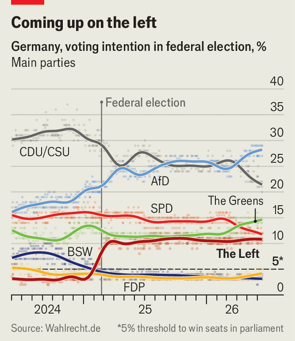

Germany’s left-wing Die Linke party has won over the young
The populists promise a “scorching hot socialist summer” of protest
June 18th 2026

“MERZ…LECK…” yells Heidi Reichinnek, a young leader of Germany’s Die Linke (The Left) party. “Eier!” her younger audience hollers back, erupting in giggles and cheers. Urging Friedrich Merz, the country’s chancellor, to “lick eggs” (ie, balls) is not the sort of thing expected of senior German politicians. But the lively patter of Ms Reichinnek, a social-media superstar with a tattoo of the communist heroine Rosa Luxemburg on her left arm, is one reason why the populist Die Linke is enjoying a moment. Sitting at around 11% in polls (see chart), it hopes to overtake the ailing Social Democrats (SPD), the junior coalition partner to Mr Merz’s Christian Democrats (CDU). “Speaking young people’s language isn’t easy,” says Antonia, a fan. “Heidi seems like she can relate to us.”

Just 18 months ago Die Linke looked on the verge of extinction. An acrimonious split with Sahra Wagenknecht, a party star-turned-gadfly, had left it bruised and shorn of many MPs. In eastern Germany, once its heartland, its electorate was dying out or turning to the hard-right Alternative for Germany (AfD). Yet thanks to skilled organisation, a disciplined campaign focused on rent and redistribution and an unwise decision by Mr Merz to vote with the AfD on anti-immigration measures, Die Linke tripled its support in weeks, drew 9% of the vote in the general election in February 2025 and saw its membership more than double. Its success was the most surprising story of the campaign.
It also meant that “our electorate and our membership changed completely,” notes Janis Ehling, the party’s campaign mastermind. Die Linke has become more western, more female and much younger: it is the most popular party among Germans under 24. Ms Reichinnek’s potty-mouthed speech was delivered at “Unfollow Bundeswehr”, an event in Berlin organised to oppose the potential reintroduction of conscription. Many of her fans there were too young to vote.
The influx of members has turned Die Linke, formed in 2007 as a fusion of the old East German communists and an SPD splinter group, into a different party. The newcomers’ political education is “very online and very American”, says Loren Balhorn, a party member and editor of the German edition of Jacobin, a left-wing journal. There have been growing pains. Rows over Gaza have been especially brutal. Some older figures have quit over what they regard as a tilt to antisemitism.
The party’s fissures will be tested at its annual congress in Potsdam this weekend. Some arguments will be familiar: over whether MPs should cap their own salaries, for example. But with state elections looming, perhaps the toughest debate will be over whether the party sees itself as a protest outfit with a political wing, or should position itself as a power player.
This question has acquired fresh urgency in Germany’s east, where the strength of the AfD—shunned by every other party—has squeezed the space for viable coalitions. The CDU also excludes coalitions with Die Linke, but sometimes needs its votes to stay in office. This is hard to swallow for those in Die Linke who do not see it as their job to keep conservatives in power. But others believe nothing matters more than fighting the AfD, even as they seek to seduce its voters.
The AfD could win an outright majority in the eastern state of Saxony-Anhalt, which votes on September 6th. If not, Die Linke will probably be needed to elect a CDU premier. A brighter prospect beckons in Berlin, which votes two weeks later. There, the fragmented vote gives Die Linke a chance of forging a left-wing majority. Its signature policy in the capital—the expropriation of residential properties from corporate landlords—appeals to some in the Greens and the SPD, the parties with which it would seek to govern. Some corporations are deeply worried.
Everyone in Die Linke can agree on raging against heartless conservatives, and Mr Merz’s government is happy to oblige. It wants cuts to welfare and health care, and a bitter row over pensions looms once a state-appointed commission reports this month. Kathrin Gebel, an MP who sits on Die Linke’s board, promises “a scorching hot socialist summer” of protest. ■
To stay on top of the biggest European stories, sign up to Café Europa, our weekly subscriber-only newsletter.